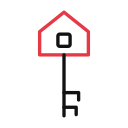
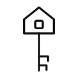
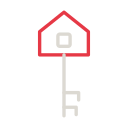
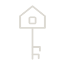
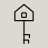

Card 1. Housing, a new topic drawing
Needs your approval by name
The guide has no drawing for housing yet. In the Civic Line a lone house already means one household: it is the base of CL-054 Home Equity and the other household drawings, and rows of narrow houses carry Housing Scarcity. So a Housing drawing has to name homes for many households, renters as well as owners, and stay apart from those. The icon designer drew three options in Civic Line’s construction and withdrew one, so the card shows A and C.
Each option shows at 128, 48 and 24 px, the red edition and the black, on Newsprint and on Charcoal. Topic drawings are used from 48 px up, so the 24 px view is a reference size only.
Option A
Recommended
On Newsprint
Red edition
Black edition
On Charcoal
Red edition
One color
24 px: reference size only
- What it shows
- Homes of more than one kind: a flat-roofed apartment block and a pitched-roof house on one ground line; red on one window of the block.
- Naming test at 48 px
- “An apartment block beside a pitched-roof house on one ground line: homes, or a neighborhood; the red window reads as one lit home.” Names it nearly.
- The icon designer’s verdict
- “Housing” or “homes”; at worst “neighborhood”.
- The creative director’s note
- Homes of more than one kind: an apartment block and a house on one ground line, red on one window.
- Closest settled drawing
- CL-051 Market Power, 0.690
- Against CL-054 Home Equity
- 0.501
- Closest other option
- Option C, 0.431
- Scores, 1 to 5
- Craft 4 Clarity 4 Brand 4 Usefulness 4 Evidence 4 Accessibility 4
Option C
On Newsprint
Red edition

Black edition

On Charcoal
Red edition

One color

24 px: reference size only
- What it shows
- A house key: a key whose bow is a house; red on the bow.
- Naming test at 48 px
- “A house key: a home, or owning one; at 24 px a house on a post, like a birdhouse.” Names it nearly.
- The icon designer’s verdict
- “House key”, which a reader may call “home” or “real estate”.
- The creative director’s note
- A house key; the clearest small shape, leaning to home.
- Closest settled drawing
- CL-022 Act, 0.656
- Against CL-054 Home Equity
- 0.270
- Closest other option
- Option A, 0.431
- Scores, 1 to 5
- Craft 4 Clarity 4 Brand 4 Usefulness 4 Evidence 4 Accessibility 4
Why two options Option B is withdrawn. Redrawn with two doors under one roof, it still reads first as one tall house at 48 px, so the card shows A and C.
Its nearest settled drawings
The drawings the icon designer set Housing beside, as they are in the guide today. Under each, the look-alike figure of each option against it.
CL-054 Home Equity
A 0.501 · C 0.270
CL-053 Housing Scarcity
A 0.251 · C 0.058
CL-063 Essential Costs
A 0.575 · C 0.469
R-30 By-Right Housing
A 0.290 · C 0.269
CL-051 Market Power
A 0.690 · C 0.264
Housing at 24 px
Housing is not on the list of drawings that may be set at 24 px, and adding it changes what you approved for small sizes. Below, each option as a 1x screen draws it at 24 px, beside what a 2x screen draws.
The icon designer recommends keeping Housing at 48 px and up for now. If you want it in kickers, the icon designer draws its 24 px fit once you pick an option, and it joins the list when you approve that fit.
Option A

Option C

Each picture is the black edition, the one used under 48 px, on Newsprint. The 2x picture is set at its own size, twice the drawing’s, so each of its pixels shows.
The icon designer recommends
Option A
Option A, homes of more than one kind. It names housing as the atlas covers it, renters and owners alike, and keeps furthest from the drawings where a house means one household: 0.251 against CL-053, 0.290 against R-30 and 0.501 against CL-054. If you would rather have the clearest small shape, C, the house key, is the one, though a reader may call it home.
The creative director recommends
Option A
A names housing for renters and owners alike, homes of more than one kind, and keeps furthest from the drawings where a house means one household (0.501 against CL-054, 0.251 against CL-053, 0.290 against R-30). The lit red window is a precise use of the accent.
What you approve by name
One Housing option as a new topic drawing, used at 48 px and up.
The creative director’s scores, 1 to 5
| Drawing | Craft | Clarity | Brand | Usefulness | Evidence | Accessibility |
|---|---|---|---|---|---|---|
| Housing, option A | 4 | 4 | 4 | 4 | 4 | 4 |
| Housing, option C | 4 | 4 | 4 | 4 | 4 | 4 |
Every score with its reason
Housing, option A
- Craft 4 Sits at the capped fit with the set’s line, round caps and joins, and holds at 128 px and 2x; its six windows stay open at 48 px and close up at 24 px.
- Clarity 4 Reads as an apartment block beside a house: homes of more than one kind, the subject as the atlas holds it (A5, A6 and EC9 in D09); the label lands at once.
- Brand fidelity 4 One red accent, one window of the block, about 4 percent of its ink, near the set’s lowest (R-39, 3.5 percent; my approximate measure); no lone house, row of houses or equal sign.
- Usefulness 4 Four editions, 12 tiles at the 48 px bare floor, PNGs at 128 and 256 px, previews beside the neighbors and a manifest; every tile keeps at least 21 units to its edge.
- Evidence honesty 4 The meaning note comes from the atlas model by script and names its one outside source with a read date; the naming test is labeled as one reader; the likeness figures match my rerun.
- Accessibility 4 The shapes carry the subject in the black edition without red, and the label carries the name, as the system allows for red on Newsprint.
Housing, option C
- Craft 4 The clearest silhouette at every size; its teeth are small at 48 px.
- Clarity 4 Reads as a house key: getting into a home, close to housing’s ‘who can stay in it’; it leans to home and ownership.
- Brand fidelity 4 One red accent, the house-shaped bow, about half its ink, level with the set’s highest (CL-057, 48 percent; my approximate measure); it reuses the set’s key, which CL-047 Data Rights draws in red and R-37 Feed Choice in black.
- Usefulness 4 Four editions, 12 tiles at the 48 px bare floor, PNGs at 128 and 256 px, previews beside the neighbors and a manifest; every tile keeps at least 21 units to its edge.
- Evidence honesty 4 The meaning note comes from the atlas model by script and names its one outside source with a read date; the naming test is labeled as one reader; the likeness figures match my rerun.
- Accessibility 4 The shapes carry the subject in the black edition without red, and the label carries the name, as the system allows for red on Newsprint.